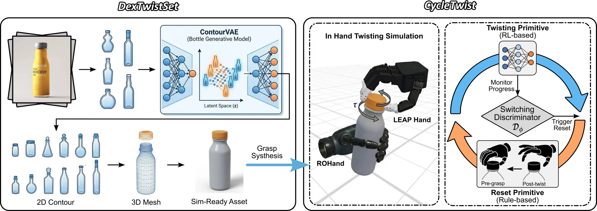
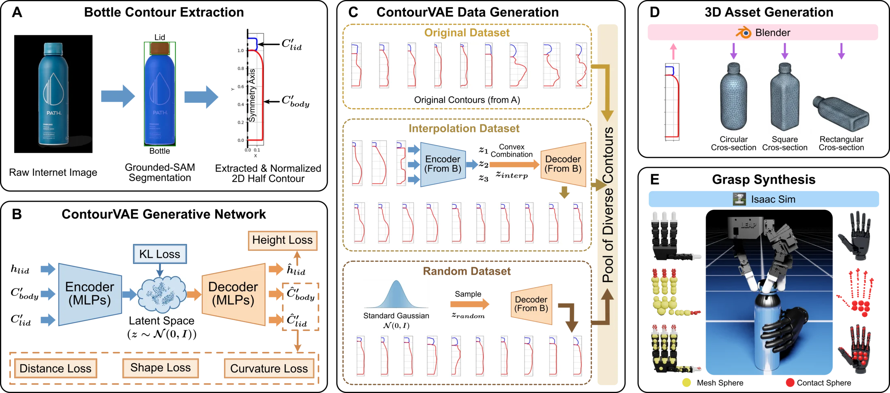
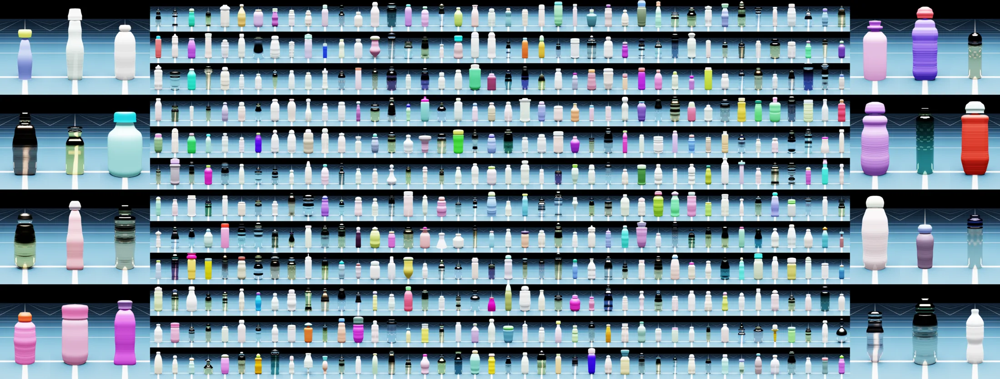
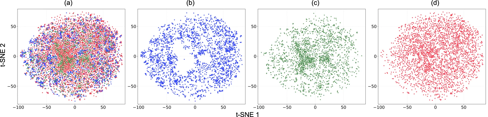
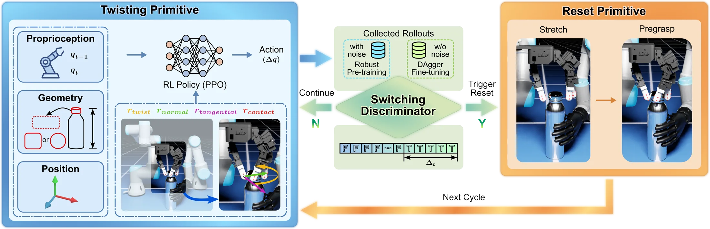
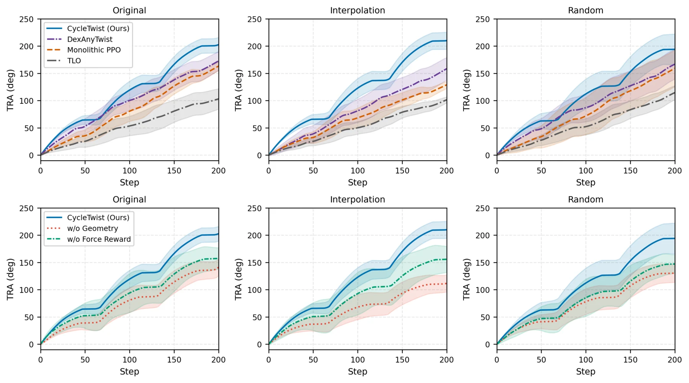
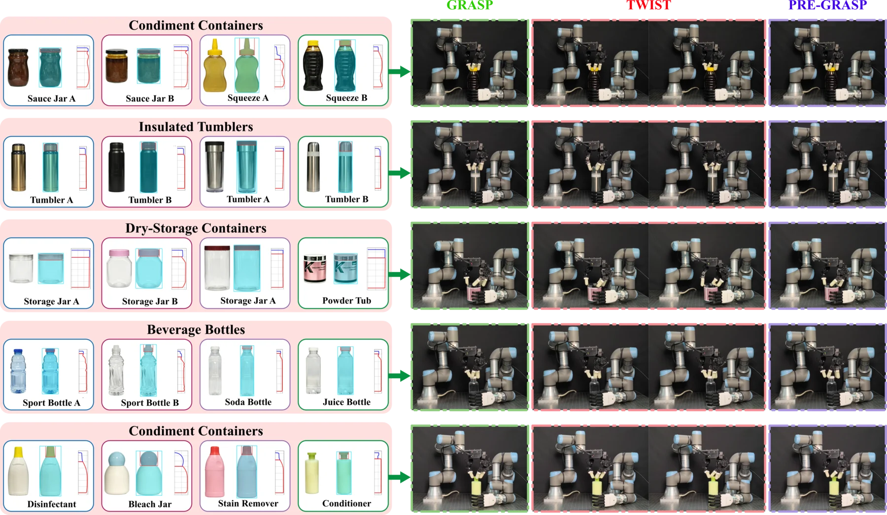

Task-specific assets at scale
Internet bottle images become paired body–cap contours, articulated URDF/USD assets, and validated bimanual grasps.
Dexterous manipulation · synthetic assets · sim-to-real
Synthetic Asset Generation with Hybrid Primitive Control for Dexterous Screw-Cap Manipulation
A unified framework that pairs 4,015 simulation-ready articulated bottles with an explicit twist–reset controller for stable, long-horizon bimanual unscrewing.
01 · Overview
Dexterous cap opening must generalize across container geometry while sustaining repeated contact-rich motion. DexCapTwist addresses both the missing training assets and the cyclic structure of unscrewing.

Internet bottle images become paired body–cap contours, articulated URDF/USD assets, and validated bimanual grasps.
A geometry-aware PPO policy generates cap rotation while a deterministic reset recovers a repeatable hand configuration.
Policies trained only in Isaac Lab transfer to a dual-arm platform across 20 unseen everyday containers.
02 · DexTwistSet
ContourVAE expands real bottle silhouettes in latent space. The decoded contours are converted into 3D bottles, assigned cap-body joints, and checked for reachable, stable bimanual initialization.

Grounded-SAM and geometric filtering recover aligned body and cap contours.
Original, interpolated, and randomly sampled contours cover a broad shape distribution.
Blender creates circular, square, and rectangular articulated bottle meshes.
BODex initialization and Isaac Lab checks retain simulation-ready assets.


03 · CycleTwist
Instead of forcing one policy to learn incompatible contact and recovery behaviors, CycleTwist assigns them to specialized primitives and learns when to switch.

Geometry-aware actions maximize cap rotation and tangential fingertip force.
Temporal gating detects stable twist completion from real-time observations.
Stretch and pre-grasp stages restore the hand for the next rotation cycle.
04 · Simulation Results
All methods are evaluated for 200 steps on held-out Original, Interpolation, and Random subsets. CycleTwist achieves the strongest total rotation angle and twisting velocity throughout.
Representative contact-rich twisting and hand-reset cycles across synthetic bottle geometries.
| Method | Original TRA | Interpolation TRA | Random TRA | Mean TRA |
|---|---|---|---|---|
| Monolithic PPO | 163.5° | 129.0° | 159.3° | 150.6° |
| TLO | 103.2° | 101.5° | 114.7° | 106.5° |
| DexAnyTwist | 172.8° | 158.6° | 166.9° | 166.1° |
| CycleTwist | 202.7° | 210.1° | 194.1° | 202.3° |

Ablation
Removing body height and cap contour inputs lowers TRA, ERR, and velocity across every split.
Ablation
Without tangential-force reward, fingertip slippage increases and rotation becomes less consistent.
Switching
DAgger refinement raises online successful switching from 84.9% to 91.2%.
05 · Real World
Physical bimanual cap manipulation on everyday containers without real-world fine-tuning.
